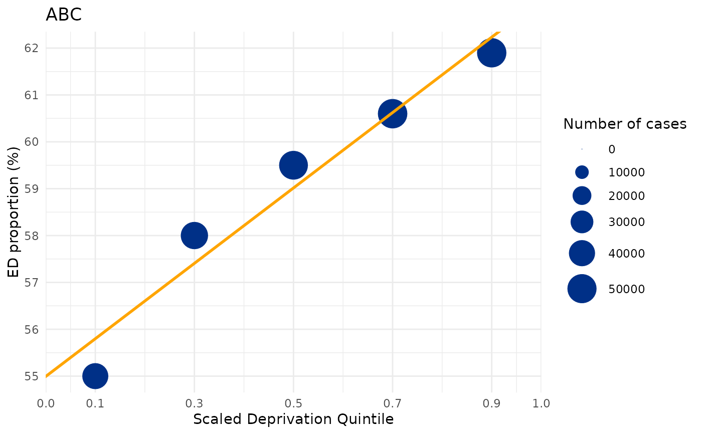

Add SII plots to SII results
plot_sii.RdCreates a ggplot visualisation for each row of a data frame produced by
derive_sii(). Each plot shows the observed early diagnosis proportions for
the five deprivation quintiles together with the fitted weighted regression
line used to calculate the Slope Index of Inequality (SII).
Arguments
- sii_tbl
A data frame returned by
derive_sii(). Must contain the columnsdata(nested deprivation-quintile data) andsii_model(fitted weighted regression model).- id
Character string giving the column to use as the plot title.
Value
The input data frame with an additional plot list column containing one
ggplot object per row.
Details
Point size is proportional to the number of staged cancer cases within each deprivation quintile, illustrating the weighting applied during regression. The fitted line represents the relationship between deprivation and early cancer diagnosis from which the SII is derived.
The function adds a new list-column named plot containing a ggplot object
for each organisation or grouping.
Examples
example_df <- data.frame(
date = rep(as.Date("2026-02-01"), 5),
org_code = rep("ABC", 5),
deprivation = c(
"1 - most deprived", "2", "3", "4", "5 - least deprived"
),
ed_prop = c(0.55, 0.58, 0.595, 0.606, 0.619),
ed_denom = c(39546, 43663, 48796, 51117, 50739)
)
example_result <- example_df |>
derive_sii(
by = c("date", "org_code"),
ed_prop_col = "ed_prop",
ed_denom_col = "ed_denom",
depr_col = "deprivation"
) |>
plot_sii(id = "org_code")
# View the generated plot
example_result$plot[[1]]
